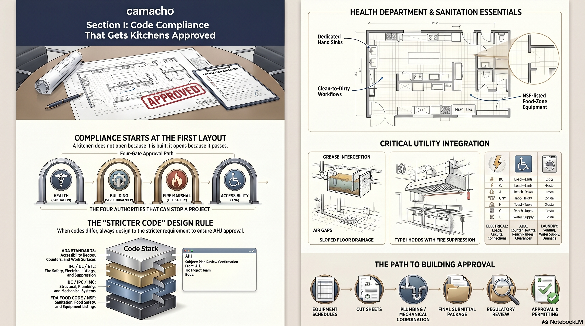
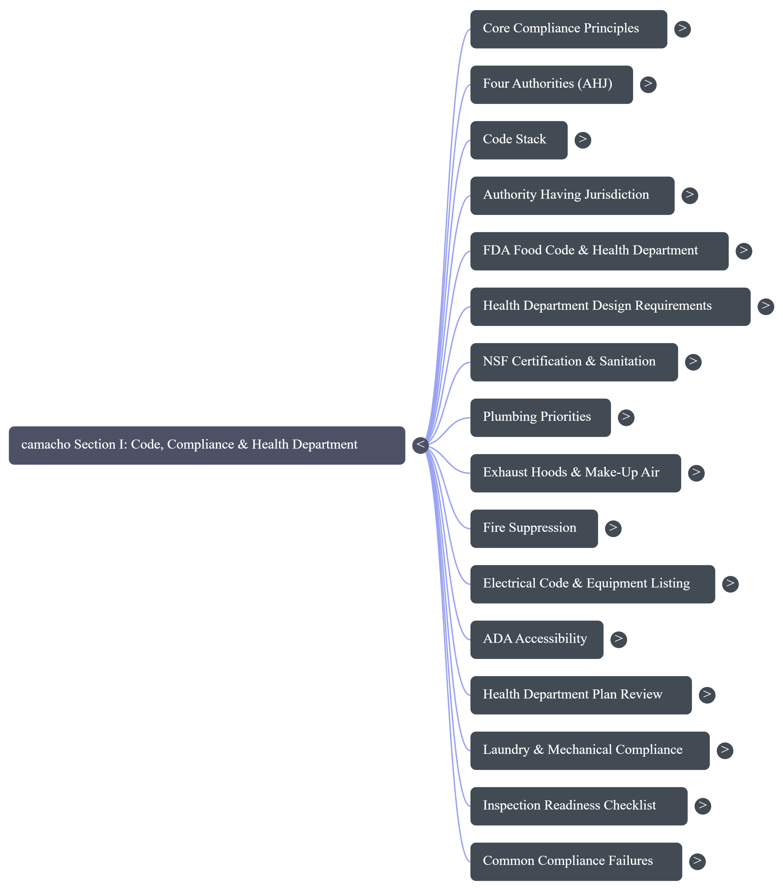

Create The Edge Sales & Proposal Development Training Guide · 2026 Edition
I
Regulatory Compliance & Standards
A project facility does not open because it is built. It opens because it passes. Code compliance is not a final-stage correction. It must be designed into the space from the very first layout.
Create The Edge Associates, Inc. · [Company Address] · Internal Use Only · 2026
MODULE I · BRIEFINGS
Watch and Listen
Section Briefings
Watch the video, listen to the podcast, then read the module. The same compliance discipline in three formats.
Video · Code Compliance: Getting Kitchens Approved
How to design client facilitys that pass all four approval gates, from applicable regulatory authority to building department.
Audio · How to Pass Commercial Kitchen Inspections
The compliance discipline that prevents failed compliance reviews and costly delays, narrated.
Module I · Kitchen Code Compliance Guide

Module I · Concept Mind Map

MODULE I · FOUNDATIONS
I.1 · Why Compliance Comes First
A Kitchen Opens Because It Passes, Not Because It Is Built
Code compliance is not a final-stage correction. It must be designed into the space from the very first layout. A delayed opening costs thousands of dollars a day in lost revenue, idle labor, and extended carrying costs.
The most technically sophisticated facility design on paper fails if it cannot survive the approval process. Every piece of equipment, every drain location, every hand sink placement, every exhaust calculation must satisfy the Authority Having Jurisdiction before a approval is issued and an operation begins. Designing to code from the first layout is not optional; it is the foundation that makes every downstream decision defensible.
At Create The Edge, code compliance is integrated into the design process, not appended to it. The compliance checklist in this module is the same discipline as the fee defense checklist in Section H and the file discipline checklist in Section K, applied to regulatory approval.
▦ The Stricter Code Rule
When two codes differ, always design to the stricter requirement. The AHJ's interpretation overrides standard text, and local adoptions frequently modify national standards. Always confirm gray areas with the AHJ in writing before the design is committed.
Figure I.1.1 · The Four Gates That Can Stop a Project
◉
Gate One
Regulatory Authority
Sanitation, food flow, and public health. Hand sink placement, clean-to-dirty separation, NSF-listed equipment, finish schedules.
◉
Gate Two
Building Department
Life safety, structural integrity, and infrastructure. Electrical load, plumbing, fire suppression, mechanical exhaust, ADA clearances.
◉
Gate Three
Fire Marshal
Life safety systems. Fire suppression alignment, hood certification, egress clearances, suppression nozzle targeting.
◉
Gate Four
Accessibility (ADA)
Counter heights, reach ranges, clearances, and accessible routes for all users. Federal requirement on all public and commercial projects.
MODULE I · FOUNDATIONS
I.2 · The Four Authorities
The Authority Having Jurisdiction
The AHJ is the ultimate law of the land. The AHJ's interpretation of any code provision overrides the standard text, which is why confirming gray areas in writing is not optional.
AHJ stands for Authority Having Jurisdiction. It is the local official, agency, or body responsible for enforcing the requirements of a code. In commercial facility design, the AHJ is typically the local applicable regulatory authority for operational standards, the building department for structural and MEP systems, the fire marshal for life safety, and a separate accessibility inspector for ADA. In some jurisdictions, one agency handles multiple areas.
The critical fact about the AHJ is that its interpretation of any code provision is final. Two kitchens designed identically may face different requirements in different jurisdictions because the AHJ's reading of the applicable code differs. This is why Create The Edge confirms gray areas with the AHJ in writing before the design is committed, not after.
☰ From the Files
A project in one jurisdiction may require hand sinks within 10 feet of every production operations station; the same code interpreted by a different AHJ may allow 15 feet. Design to what the AHJ in that specific jurisdiction has told you in writing, not to what passed in a different project in a different city. Get the interpretation first, design second.
▦ Rule of the House
Confirm every gray-area code interpretation with the AHJ in writing before finalizing the layout. A verbal approval from a plan reviewer does not bind the AHJ; a written response does. When the answer matters to the design, get it in writing and attach it to the project file.
MODULE I · FOUNDATIONS
I.3 · The Code Stack
The Commercial Kitchen Code Stack
Codes are layered. National codes establish the baseline. Local adoptions modify them. The AHJ interprets both. When layers conflict, the stricter requirement governs.
Figure I.3.1 · The Code Stack (Top to Bottom = Most to Least Authority)
AHJ Interpretation
The ultimate authority. Overrides standard text in every conflict. Confirm in writing.
Local Adoptions & Amendments
Municipal and state modifications to national standards. Municipalities frequently modify adopted editions. Always confirm the current local edition.
State Code Adoptions
State-level adoptions of national codes, often with amendments. The state version governs where no local amendment exists.
National Codes (FDA Food Code, IPC, NEC, applicable safety code)
The national baseline: Food Code for operational standards, IPC for plumbing, NEC for electrical, applicable safety code for fire safety. Establishes the floor, not the ceiling.
Figure I.3.2 · Key National Codes and Their Scope
Code
Full Name
What It Governs
FDA Food Code
U.S. Food & Drug Administration Food Code
Sanitation, operational safety, equipment standards, and food-handler practices
IPC
International Plumbing Code
Plumbing systems, drainage, grease interception, water supply
NEC
National Electrical Code (applicable safety code 70)
Standard for Ventilation Control and Fire Protection
Commercial cooking building systems, hood requirements, fire suppression
IBC
International Building Code
Structural, occupancy, egress, and ADA baseline requirements
IMC
International Mechanical Code
HVAC, mechanical systems, make-up air, building systems
MODULE I · FOUNDATIONS
I.4 · Dual-Track Approval Path
The Dual-Track Approval Path
Every client facility project runs two parallel approval tracks: the Regulatory Authority track and the Building Department track. A complete, coordinated plan-review package is the single biggest lever on review speed.
♥
Regulatory Authority Track
Focus: Sanitation
Evaluates food flow, operational standards, hand sink placement, clean-to-dirty separation, finish schedules (smooth, cleanable surfaces), and NSF-listed equipment. Outcome: Operational Health Permit.
☴
Building Department Track
Focus: Life Safety
Evaluates electrical load, plumbing infrastructure, fire suppression, mechanical exhaust, structural connections, and ADA clearances. Outcome: Certificate of Occupancy (CO).
Both tracks run simultaneously from the plan-review stage. A project that clears health but fails building cannot open; neither can a project that clears building but fails health. Coordinating the two packages from the start, ensuring that equipment schedules, utility connections, and spatial layouts satisfy both sets of reviewers, is what produces a first-pass approval rather than a correction cycle that delays opening by weeks.
✓ Best Practice
Submit the applicable regulatory authority and building department packages simultaneously where the jurisdiction allows. Staggered submissions mean staggered corrections. A coordinated simultaneous submission compresses the review timeline and reduces the risk of a correction in one track that requires a change in the other.
MODULE I · HEALTH DEPARTMENT
I.5 · Designing for the Regulatory Authority
Designing for the Regulatory Authority
The applicable regulatory authority evaluates the behavior of the kitchen, looking at operational standards, finish schedules, and cross-contamination risks driven by spatial layout. These are design decisions, not installation decisions.
Health department reviewers read a project facility layout the same way a operational safety inspector reads a project facility during an operational compliance review: they trace the flow of food, staff, and waste to find where cross-contamination risks are highest. A design that fails to establish clear clean-to-dirty separation, or that places hand sinks too far from preparation stations, will receive a correction notice before the first piece of equipment is ordered.
Food flow must move from receiving to storage to prep to cooking to service without crossing waste or soiled zones
Cross-contamination of ready-to-eat food is a primary health violation
Hand Sink Placement
Required within a defined radius of every production operations station; placement is typically 10 to 15 feet, confirmed with the local AHJ
Improper placement is one of the most common correction notices on plan review
Finish Schedules
All food-contact and splash surfaces must be smooth, non-absorbent, and cleanable; coved corners required at floor-wall junctions
Rough or porous surfaces trap bacteria and cannot be sanitized
NSF-Listed Equipment
All food-contact equipment must carry applicable certification (or equivalent)
Proves to the AHJ that the equipment meets baseline commercial operational standards standards
Dedicated Handwashing Sinks
Handwashing sinks must be dedicated to hand washing only; they cannot double as food prep or equipment sinks
Mixing uses creates cross-contamination risk and violates the Food Code
▦ Rule of the House
Create The Edge designs to the most restrictive standard applicable to the project. When the local code requires hand sinks within 10 feet and the FDA Food Code allows 15 feet, design to 10 feet. The stricter requirement is always the correct baseline.
MODULE I · HEALTH DEPARTMENT
I.6 · NSF Certification & Sanitation Standards
NSF Certification and the Baseline of Sanitation
applicable certification is the proof that a piece of commercial equipment meets baseline operational standards standards. Specifying standards-certified equipment is non-negotiable. It dramatically reduces plan-review rejection risk.
NSF International certifies professional services equipment to standards that ensure materials, construction, and cleanability meet commercial operational standards requirements. An AHJ reviewing a project facility layout looks for applicable certification as the baseline indicator that equipment is appropriate for commercial client service delivery. Equipment without certification, or with certification from an unrecognized body, raises immediate questions that slow the approval process.
Figure I.6.1 · NSF Construction Standards
Standard
Requirement
Why It Matters
Coved Corners
Seamless, rounded interior corners at all floor-wall and wall-ceiling junctions in food zones
Prevents debris buildup and allows complete operational standards without gaps
Smooth Welds
Ground and polished joints at all seams on food-contact surfaces
Eliminates bacteria traps in crevices between joined surfaces
Leg Clearances
Minimum 6 inches of clearance beneath equipment for floor cleaning
Allows thorough cleaning under equipment; reduces pest harborage risk
Non-Absorbent Materials
All food-contact surfaces must be smooth, non-porous, and cleanable
Porous materials cannot be sanitized to commercial standards
✓ Best Practice
Specify applicable certification in every equipment description in the MasterSpec. This language signals to the equipment dealer that Create The Edge will not accept substitutions that lack the certification, protecting the client from a plan-review correction after the equipment is ordered.
MODULE I · CRITICAL UTILITIES
I.7 · Plumbing Priorities
Plumbing Priorities: Drains, Grease, and Air Gaps
Commercial project facility plumbing is more complex than residential plumbing because it must manage grease, food waste, and temperature extremes while satisfying both the applicable regulatory authority and public works. Getting it right at the layout stage prevents field corrections.
Figure I.7.1 · The Plumbing Trinity
1
Priority One
Indirect Waste (Air Gap)
Required for all production operations sinks and ice bins. A direct pipe connection to the sewer is illegal because a downstream clog would push raw sewage directly into the production operations area. The air gap physically breaks the connection.
2
Priority Two
Floor Sinks and Drains
Sized and positioned to capture spills and discharge from food equipment. Sloped floors drain toward floor sinks; improper slope creates standing water and health violations.
3
Priority Three
Grease Interceptor
Mandated by public works to keep fat, oil, and grease out of municipal sewers. Sizing dictates project facility capacity. Under-sized interceptors back up under production load and cause operational failure.
▦ Rule of the House
Every production operations sink, warewashing sink, and ice bin must discharge through an indirect waste connection, not a direct drain connection. This is the Food Code standard in every jurisdiction Create The Edge works in. A direct connection is a code violation that applicable regulatory authoritys discover immediately on plan review.
⚠ Watch Out: Grease Interceptor Sizing
Grease interceptors are sized based on the production volume of the kitchen, not the square footage. An interceptor sized for a school service area will fail under the production load of a hospital project facility of the same area. Size the interceptor for the actual cooking program, not the footprint.
MODULE I · CRITICAL UTILITIES
I.8 · Exhaust Hoods & Make-Up Air
Exhaust Hoods and the Ventilation Matrix
Hood type, coverage, exhaust rate, and make-up air must balance perfectly. An imbalanced building systems system creates negative pressure, drafts, odor migration, and energy waste, and fails mechanical compliance review.
Figure I.8.1 · Hood Type Selection Matrix
Hood Type
Primary Function
Fire Suppression
Equipment Trigger
Type I Hood
Removes grease, smoke, and heat from cooking equipment that produces grease-laden vapors
Required. Welded exhaust ducting and listed fire suppression system
Removes heat, moisture, and odors from equipment that does not produce grease vapors
Not required. Standard galvanized ducting
High-temp dishwashers, ovens, pasta cookers (AHJ dependent)
▦ The Exhaust-to-Make-Up-Air Balance
Exhaust volume (CFM out) must equal make-up air (CFM in). A project facility that exhausts more than it supplies creates negative pressure: doors are hard to open, combustion appliances back-draft, and cold air infiltrates from every unsealed gap. Create The Edge coordinates the exhaust and make-up air calculations with the MEP engineer during Design Development.
✓ Best Practice: Ventless Equipment
Specify ventless combi ovens where the project facility layout, budget, or building conditions make hood installation impractical. Ventless models carry UL 710B certification and require no exhaust ducting, eliminating the Type I hood cost ($3,000+ per linear foot) and the make-up air unit. Confirm the ventless certification is current and AHJ-accepted in the specific jurisdiction before committing to the specification.
MODULE I · CRITICAL UTILITIES
I.9 · Fire Suppression
Fire Suppression: Precision Alignment
Fire suppression nozzles are engineered to target specific cooking surfaces and vat sizes. The suppression system must perfectly match the final cooking lineup. A change to equipment after the system is designed forces a costly approval resubmittal.
Commercial project facility fire suppression systems are listed systems: each system is certified for specific equipment configurations under a listed arrangement. Nozzle positions, coverage areas, and agent quantities are engineered to the exact equipment lineup. Substituting a 14-inch fryer for an 18-inch fryer invalidates the suppression design and requires a new layout, new calculations, and in most cases a new approval submission.
Figure I.9.1 · Fire Suppression Design Rules
Rule
What It Means
What Violating It Costs
Lock the hotline early
Finalize the cooking equipment schedule before the suppression design begins
Equipment changes after design force a full suppression redesign and approval resubmittal
Nozzle specificity
Each nozzle is positioned and sized for the specific appliance it protects
Improper coverage = failed compliance review; potential liability for fire damage
No substitutions without re-engineering
Swapping one piece of cooking equipment for another of different size requires new suppression calculations
Lock the hotline equipment schedule before the fire suppression design begins. Moving equipment means moving suppression nozzles and re-engineering the agent calculations. Any cooking equipment change after the suppression design is issued must be communicated to the suppression contractor immediately. Create The Edge flags this risk in every proposal scope description.
MODULE I · CRITICAL UTILITIES
I.10 · Electrical Integrity
Electrical Integrity: The Tag-to-Schedule Match
Every piece of equipment in a client facility has a nameplate specifying its voltage, phase, amperage, and connection type. The electrical design must match that nameplate exactly. Mismatches create field change orders, delays, and potential equipment warranty voids.
The tag-to-schedule match is the discipline of verifying that the electrical connection specified in the construction documents matches the actual equipment nameplate. A spec that calls for 208V/1-phase and an equipment nameplate that requires 240V/3-phase creates a field change order the day the equipment is delivered. That change order delays the opening, creates contractor disputes, and may void the equipment warranty if the wrong voltage is applied even temporarily.
Figure I.10.1 · Electrical Coordination Checklist
Verification Point
What to Confirm
Voltage
Nameplate voltage matches the building's available service (208V, 240V, or 480V systems)
Phase
Single-phase vs. three-phase matches both the equipment requirement and the panel capacity
Amperage
Circuit breaker and wire gauge sized for the nameplate amperage, not a rounded estimate
Connection type
NEMA plug configuration or hard-wired connection matches the equipment specification
UL listing
Equipment carries a current UL or ETL listing number confirming factory testing
⚠ Watch Out
Equipment manufacturers sometimes change nameplate specifications between the time the equipment is specified and the time it is delivered. Before the electrical rough-in begins, confirm current nameplate data directly from the dealer. A submittal review at the start of construction prevents the field mismatch that causes opening delays.
MODULE I · CRITICAL UTILITIES
I.11 · ADA Accessibility
ADA Accessibility Requirements
The Americans with Disabilities Act applies to all commercial and public facilities. Counter heights, reach ranges, clearances, and accessible routes are federal requirements, not design preferences.
Figure I.11.1 · Key ADA Requirements for Professional Services Facilities
Element
ADA Standard
Design Application
Counter Heights
Maximum 34 inches for accessible transaction surfaces
POS stations, serving counters, and customer-side service areas in serveries
Forward Reach
Maximum 48 inches above finished floor; minimum 15 inches
Controls, dispensers, and service items accessible from a wheelchair position
Side Reach
Maximum 54 inches above finished floor
Side-mounted controls and dispensers in serving areas
Under-counter clearance at accessible seating and workstations
Accessible Routes
36 inches minimum clear width; 60 inches at turning radius
All paths of travel from entry to seating and service areas
✓ Best Practice
Confirm ADA requirements with the building department during the Design Development phase. Some jurisdictions adopt state accessibility codes that differ from the federal ADA standard, typically in the stricter direction. Design to the more restrictive of the two, and document the standard used in the drawing set.
MODULE I · CRITICAL UTILITIES
I.12 · Laundry & Mechanical Compliance
Laundry and Mechanical Compliance
Commercial specialty service line facilities carry their own compliance requirements: venting, water supply, drainage, and utility load that differ from professional design consulting. When specialty service line is in scope, it adds a separate compliance layer to the engagement.
Commercial dryers require dedicated exhaust runs terminated outdoors; no shared duct runs with project facility exhaust
Separate chase or exterior penetration required; coordinate with mechanical early
Water Supply
Hot and cold water supply sized for the combined flow rate of all washers at simultaneous operation
Undersized supply creates inconsistent wash temperatures and increased cycle times
Drainage
Floor drains positioned beneath washer drain outlets; sized for full discharge during rapid drain cycles
Undersized drains back up; floor slopes must direct water to drains, not doorways
Electrical Load
Commercial washer-extractor and dryer loads are significant; three-phase power commonly required
Panel capacity and electrical service confirmed in SD; coordinate with electrical engineer
ADA Clearances
Front-loading equipment requires knee clearance below; accessible controls at required reach range
Equipment selection affects ADA compliance from the first layout
▦ Rule of the House
When specialty service line is in scope alongside professional services, treat it as a separate compliance track from the start. The applicable regulatory authority, building department, and MEP coordination requirements for specialty service line differ from professional services. Confirm which AHJ has jurisdiction over the specialty service line space in the specific facility type, as institutional specialty service line is sometimes governed by a different regulatory body than the kitchen.
MODULE I · INSPECTION READINESS
I.13 · The Plan Review Package
The Regulatory Authority Plan Review Package
A complete, coordinated plan-review package is the single biggest lever on review speed. Incomplete submissions cycle back; complete submissions move forward.
Health departments review a specific set of documents before issuing a plan approval. Missing any element from the required submission delays the review clock: the reviewer returns the package, the resubmission queue restarts, and the project opening timeline extends. Create The Edge assembles the plan review package as a complete submission, not a phased submission, to prevent a correction cycle that costs weeks.
Figure I.13.1 · Standard Plan Review Submission Components
Document
What It Shows
Equipment Schedule
Full list of all professional services equipment with model numbers, manufacturer, applicable certification status, and utility connections
Equipment Cut Sheets
Manufacturer specification sheets for each piece of equipment, confirming NSF listing and utility requirements
Kitchen Layout Drawing
Dimensioned floor plan showing equipment placement, hand sink locations, traffic flow, and clean-to-dirty separation
Finish Schedule
All wall, floor, and ceiling finishes in the food prep and storage zones confirming smooth, non-porous, and cleanable materials
Plumbing Diagram
Drain connections, air gaps, grease interceptor, and hand sink locations coordinated with the layout
Ventilation Diagram
Hood coverage, exhaust CFM, make-up air locations, and Type I vs. Type II designations
✓ Best Practice
Request a pre-submittal conference with the applicable regulatory authority plan reviewer before submitting. A 30-minute conversation that surfaces jurisdiction-specific requirements prevents a correction notice after the formal submission clock starts. Most applicable regulatory authoritys offer this service; Create The Edge recommends using it on every project with a new or unfamiliar AHJ.
MODULE I · INSPECTION READINESS
I.14 · Inspection Readiness Checklist
Inspection Readiness Checklist
The compliance review readiness checklist confirms that every compliance element is in place before the inspector arrives. A single missing item can result in a failed compliance review and a delay to opening that costs the client thousands of dollars per day.
Regulatory Authority Readiness
All equipment matches the approved equipment schedule exactly (model numbers, applicable certification)
Hand sinks installed at approved locations, dedicated to handwashing only
Clean-to-dirty separation maintained through equipment layout and traffic flow
All food-contact surfaces smooth, non-porous, and cleanable
Coved corners installed at all floor-wall junctions in food zones
Air gaps installed at all food prep sinks, warewashing, and ice bin drains
Grease interceptor installed and accessible for maintenance
Building Department Readiness
Type I hoods cover all required cooking equipment; fire suppression system installed and tested
Exhaust and make-up air volumes balanced and confirmed by test
All electrical connections match approved equipment schedules (voltage, phase, amperage)
Equipment has current UL or ETL listing numbers visible on nameplate
ADA clearances confirmed at all accessible counters, routes, and controls
Floor slopes drain to floor sinks; no standing water in food zones
Hotline equipment matches the approved fire suppression layout exactly
▦ Rule of the House
Run the compliance review readiness checklist before requesting the final compliance review, not after. A failed compliance review restarts the scheduling queue: the inspector returns only when the queue allows, which can add days to weeks to the opening timeline. Inspect yourself first, fix what fails, then call the AHJ.
MODULE I · ASSESSMENT
✓ Comprehensive Test
Regulatory Compliance & Standards: Assessment
15 questions across the module. Each has one correct answer. A passing score is 12 correct.
1
AHJ stands for:
AAuthority Having Jurisdiction
BApproved Health and Janitorial
CArchitectural and Housing Journal
DAmerican Hospitality Jurisdiction
2
When two applicable codes conflict on a design requirement, which standard governs?
AThe more lenient standard, to minimize client cost
BThe stricter standard always governs
CThe national standard overrides local codes
DThe designer chooses which standard to apply
3
A Type I hood is required above which type of commercial cooking equipment?
AHigh-temperature dishwashers and standard ovens only
BPasta cookers and steamers only
CFryers, broilers, griddles, ranges, woks, and char-broilers that produce grease-laden vapors
DAny equipment that produces heat
4
applicable certification on professional services equipment primarily proves:
AThe equipment was manufactured in the United States
BThe equipment meets baseline commercial operational standards standards for materials and cleanability
CThe equipment is covered by a commercial warranty
DThe equipment qualifies for federal food program use
5
Why must production operations sinks discharge through an indirect waste connection (air gap) rather than a direct drain connection?
ADirect connections are more expensive to install
BIndirect connections allow faster draining
CA direct pipe connection allows a downstream sewer backup to push raw sewage into the production operations area
DLocal codes require air gaps only on ice machines, not prep sinks
6
The dual-track approval path for client facilitys requires simultaneous approval from which two primary authorities?
AThe fire marshal and the ADA inspector
BThe applicable regulatory authority and the building department
CThe NSF and the USDA
DThe state licensing board and the local zoning authority
7
A grease interceptor is required primarily to:
AFilter cooking odors from the project facility exhaust
BReduce the temperature of hot water before it enters the drain
CCapture fat, oil, and grease before it enters the municipal sewer system
DCollect food waste for composting
8
What is the consequence of changing a cooking equipment lineup after the fire suppression system design is complete?
ANo consequence if the new equipment is the same type
BThe suppression system must be re-engineered and a new approval submission may be required
CThe suppression contractor adjusts nozzles without additional paperwork
DOnly the hood design needs to change, not the suppression system
9
In the project facility code stack, the AHJ's interpretation of a code provision:
ACan be overridden by the national code if they conflict
BOnly applies to new construction, not renovations
COverrides the standard text in every conflict and is the final authority
DIs advisory only; the designer may choose to follow the national standard instead
10
The tag-to-schedule match in electrical coordination means:
AEquipment delivery tags must be removed before the health compliance review
BThe electrical connection specified in the construction documents matches the actual equipment nameplate specifications exactly
CAll equipment must be tagged with the contractor's identification number
DEquipment schedule tags must match the floor plan numbering system
11
The maximum counter height for an accessible transaction surface under ADA is:
A36 inches
B34 inches
C42 inches
D30 inches
12
Exhaust volume (CFM out) in a client facility building systems system must equal:
AAt least 150% of the make-up air to create positive pressure
BThe make-up air volume (CFM in) to maintain balanced pressure
CHalf the make-up air volume to allow for natural infiltration
DWhatever the hood manufacturer specifies regardless of make-up air
13
Which of the following is a primary benefit of submitting a complete, coordinated plan-review package to the applicable regulatory authority?
AIt guarantees automatic approval without a site compliance review
BIt prevents a correction notice that restarts the review queue and delays the opening timeline
CIt allows the project to open before final approvals are issued
DIt reduces the equipment budget by eliminating NSF requirements
14
When specialty service line is in scope alongside a professional services project, Create The Edge treats it as:
AA minor addition that uses the same compliance track as the kitchen
BA separate compliance track with its own venting, water supply, drainage, and utility load requirements
CAn optional scope item that does not require AHJ approval
DAn architectural element outside Create The Edge's engagement scope
15
The correct time to run the compliance review readiness checklist is:
AAfter the AHJ schedules the final compliance review
BBefore requesting the final compliance review, so that any failures can be corrected before the inspector arrives
CDuring the construction document phase
DOnly if the project has had previous compliance review failures
MODULE I · ASSESSMENT
☑ Answer Legend · Part 1 of 2
Answers · Questions 1 through 8
Do not review until the test is complete.
Question 1
Correct: A · Authority Having Jurisdiction
AHJ = Authority Having Jurisdiction. The local official whose interpretation of any code provision is final and overrides standard text. See I.2.
Question 2
Correct: B · The stricter standard always governs
When two codes conflict, design to the stricter requirement. This applies between national and local codes, and between different national codes governing the same element. See I.3.
Question 3
Correct: C · Fryers, broilers, griddles, ranges, woks, and char-broilers
Type I hoods are required above equipment that produces grease-laden vapors. Type II hoods are for equipment that produces only heat and moisture without grease. See I.8.
Question 4
Correct: B · The equipment meets baseline commercial operational standards standards for materials and cleanability
applicable certification proves to the AHJ that the equipment is appropriate for commercial client service delivery. It covers materials, construction, smooth welds, coved corners, and cleanability. See I.6.
Question 5
Correct: C · A direct pipe connection allows a downstream sewer backup to push raw sewage into the production operations area
The air gap physically breaks the connection between the drain and the sewer system. A direct connection is illegal under the Food Code in all jurisdictions. See I.7.
Question 6
Correct: B · The applicable regulatory authority and the building department
The dual-track path runs health (operational standards, food flow, NSF) and building (life safety, MEP, ADA) simultaneously. Both must approve for the project to open. See I.4.
Question 7
Correct: C · Capture fat, oil, and grease before it enters the municipal sewer system
Grease interceptors prevent FOG from entering municipal sewers, where it creates blockages. Sizing is based on production volume, not project facility area. See I.7.
Question 8
Correct: B · The suppression system must be re-engineered and a new approval submission may be required
Fire suppression systems are listed to specific equipment configurations. Changing the cooking lineup invalidates the suppression design. Lock the hotline before the suppression design begins. See I.9.
MODULE I · ASSESSMENT
☑ Answer Legend · Part 2 of 2
Answers · Questions 9 through 15
The remaining answers with reasoning and sub-module cross-references.
Question 9
Correct: C · Overrides the standard text in every conflict and is the final authority
The AHJ's interpretation is final. No national code, state code, or design standard can override a written AHJ determination. This is why gray-area interpretations must be confirmed in writing. See I.2 and I.3.
Question 10
Correct: B · The electrical connection specified in construction documents matches the actual equipment nameplate exactly
Voltage, phase, amperage, and connection type must match. A mismatch creates a field change order the day equipment is delivered. Confirm current nameplate data from the dealer before rough-in. See I.10.
Question 11
Correct: B · 34 inches
ADA requires accessible transaction surfaces to be no higher than 34 inches above finished floor. This applies to POS stations, serving counters, and customer-facing service areas. See I.11.
Question 12
Correct: B · The make-up air volume (CFM in) to maintain balanced pressure
Exhaust volume must equal make-up air volume. An imbalance creates negative pressure: doors are hard to open, combustion appliances back-draft, and cold air infiltrates through every gap. See I.8.
Question 13
Correct: B · It prevents a correction notice that restarts the review queue and delays the opening timeline
Incomplete submissions cycle back. A complete submission moves forward. The review queue delay from a correction notice can add weeks to the opening timeline. See I.13.
Question 14
Correct: B · A separate compliance track with its own venting, water supply, drainage, and utility load requirements
Laundry compliance differs from professional services compliance in every utility system. Treating it as a separate track from the start prevents missed requirements at plan review. See I.12.
Question 15
Correct: B · Before requesting the final compliance review, so failures can be corrected before the inspector arrives
A failed compliance review restarts the scheduling queue. The AHJ returns only when the queue allows, which can add days or weeks to the opening timeline. Inspect yourself first, fix what fails, then call the AHJ. See I.14.
MODULE I · STUDY TOOLS
◆ Flashcards · Reference Grid
Twelve Cards · Front and Back
Twelve flashcards covering the key compliance concepts from Section I.
1AHJ
Authority Having Jurisdiction. The local official whose interpretation of any code provision is final and overrides standard text. Confirm gray areas in writing.
(I.2)
2The Stricter Code Rule
When two codes conflict, always design to the stricter requirement. The AHJ's interpretation overrides standard text. Local adoptions frequently modify national standards.
(I.3)
3The Four Approval Gates
Health (operational standards), Building (life safety/MEP), Fire Marshal (suppression), Accessibility (ADA). All four must approve for a project to open.
(I.1)
4Dual-Track Approval
Health department (operational standards/food flow) and Building department (life safety/infrastructure) run simultaneously. Missing either approval prevents opening.
(I.4)
5NSF Certification
Proves to the AHJ that equipment meets baseline commercial operational standards standards. Coved corners, smooth welds, 6-inch leg clearance, non-absorbent surfaces.
(I.6)
6Air Gap (Indirect Waste)
Required at all food prep sinks, warewashing, and ice bins. Physically breaks the connection to the sewer to prevent sewage backflow into production operations areas.
(I.7)
7Type I vs. Type II Hood
Type I: grease-laden vapors, fire suppression required. Equipment: fryers, griddles, broilers. Type II: heat and moisture only, no suppression. Equipment: dishwashers, ovens.
(I.8)
8CFM Balance
Exhaust CFM must equal make-up air CFM. An imbalance creates negative pressure: hard-to-open doors, back-drafting combustion appliances, cold air infiltration.
(I.8)
9Fire Suppression Lineup Lock
Lock the hotline equipment schedule before the suppression design begins. Any equipment change after the design is issued requires re-engineering and may require a new approval.
(I.9)
10Tag-to-Schedule Match
Every electrical connection in the construction documents must match the actual equipment nameplate: voltage, phase, amperage, and connection type. Mismatches cause field change orders.
(I.10)
11ADA Counter Height
Maximum 34 inches for accessible transaction surfaces. Minimum 36-inch clear path width. 60-inch turning radius. Knee clearance: 27H x 30W x 19D inches minimum.
(I.11)
12Inspect Before Calling the AHJ
Run the compliance review readiness checklist before requesting the final compliance review. A failed compliance review restarts the scheduling queue and can delay opening by days or weeks.
(I.14)
MODULE I · STUDY TOOLS
□ Flashcards · Interactive
Tap the Card to See the Answer
Twelve cards, one at a time. Read the front, attempt the back from memory, then tap to check.
Term · Tap to Reveal
AHJ
Authority Having Jurisdiction. The local official whose interpretation of any code provision is final. Confirm gray areas in writing before finalizing the design. (I.2)
Tap card to flip · Use arrows to navigate
1 of 12
MODULE I · STUDY TOOLS
✂ Printable Cut-Out Study Cards
Print, Cut, Carry
Twelve cards arranged for printing. Cut along the borders. Keep them on your desk.
AHJ
Authority Having Jurisdiction. Final authority on all code interpretations. Overrides standard text. Confirm gray areas in writing before design is committed.
The Stricter Code Rule
When two codes conflict, design to the stricter requirement. Local adoptions frequently modify national standards; AHJ interpretation is always final.
Four Approval Gates
Health (operational standards), Building (life safety/MEP), Fire Marshal (suppression), ADA (accessibility). All four must approve for a project to open.
Dual-Track Approval
Health department and Building department run simultaneously. A complete, coordinated submission compresses review time and reduces correction cycles.
NSF Certification
Proves equipment meets baseline commercial operational standards. Coved corners, smooth welds, 6-inch leg clearance. Required on all food-contact equipment specifications.
Air Gap (Indirect Waste)
Required at all food prep sinks, warewashing, and ice bins. Physically breaks the sewer connection. A direct connection is a Food Code violation.
Type I vs. Type II Hood
Type I: grease vapors, fire suppression required (fryers, griddles, broilers). Type II: heat/moisture only, no suppression (dishwashers, standard ovens).
CFM Balance
Exhaust CFM = Make-up air CFM. Imbalance creates negative pressure: hard-to-open doors, back-drafting, cold air infiltration, and energy waste.
Fire Suppression Lineup Lock
Lock hotline equipment schedule before suppression design begins. Any change after design requires re-engineering and possibly a new approval submission.
Tag-to-Schedule Match
Electrical connections in construction documents must match equipment nameplates: voltage, phase, amperage, connection type. Mismatches = field change orders.
ADA Counter Height
Maximum 34 inches for accessible transaction surfaces. 36-inch clear path. 60-inch turning radius. Federal requirement on all commercial and public projects.
Inspect Before Calling the AHJ
Run the checklist before requesting final compliance review. A failed compliance review restarts the scheduling queue and can delay opening by days or weeks.
MODULE I · PRESENTATION
Presentation Slides
Add Your Branded Slide Deck
Upload your own presentation slides for this module. Export each slide as a PNG image (1707 × 960px recommended) and place them in media/i/slides/ as slide01.png, slide02.png, etc.
◇
Your Branded Slide Deck Goes Here
Replace this section with your own presentation slides. Every module in Create The Edge OS has a dedicated slide slot ready for your branded content.